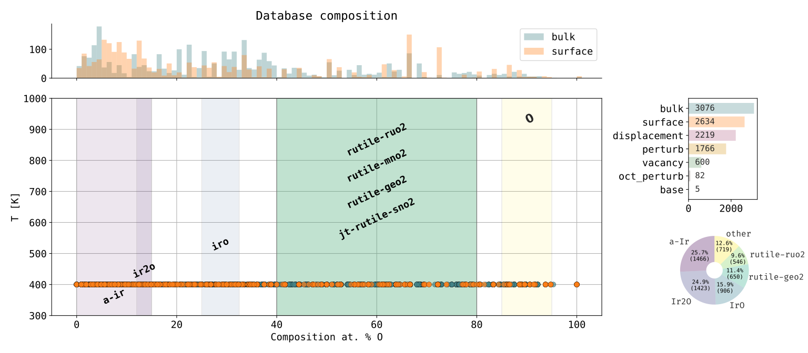
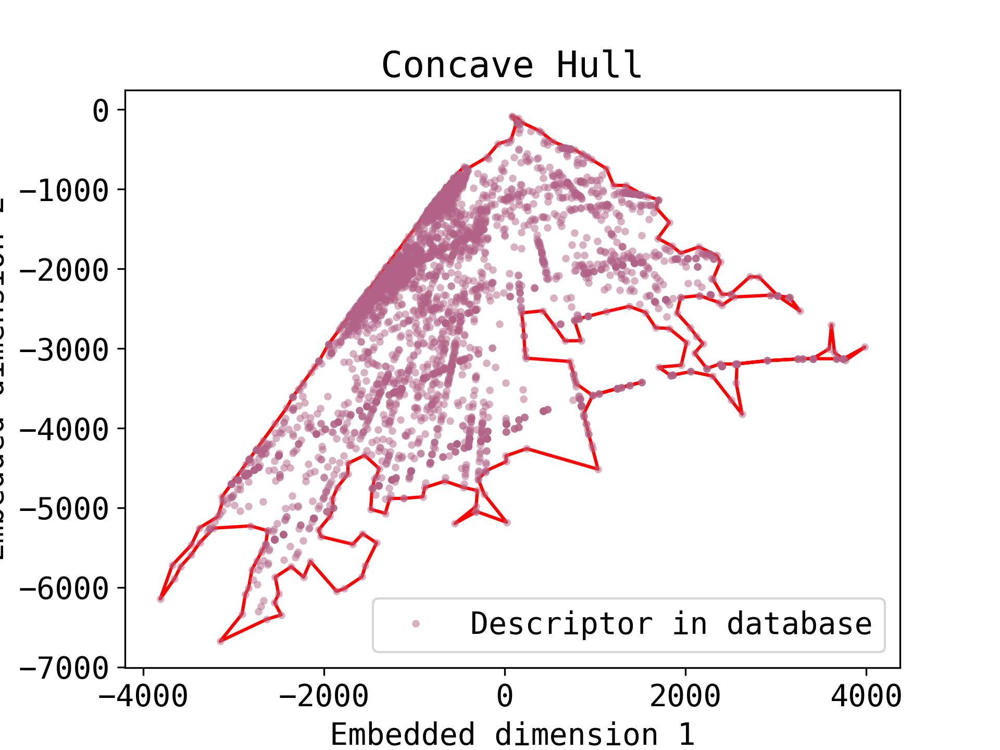

Database Generation Results
IrO database
This section shows the generation results for a \(\mathrm{IrO}\) database including several rutile phases, templates including \(\mathrm{Ir}\), and other metals such as: \(\mathrm{RuO_2}\), \(\mathrm{SnO_2}\), \(\mathrm{GeO_2}\), \(\mathrm{TaO_2}\) and \(\mathrm{MnO_2}\).

An autoencoder can be use to reduce the dimensionality of the descriptors (SOAP in this case) to a 2D representation. The concave hull can be computed in this embedded space to highlight the limits of the database.
